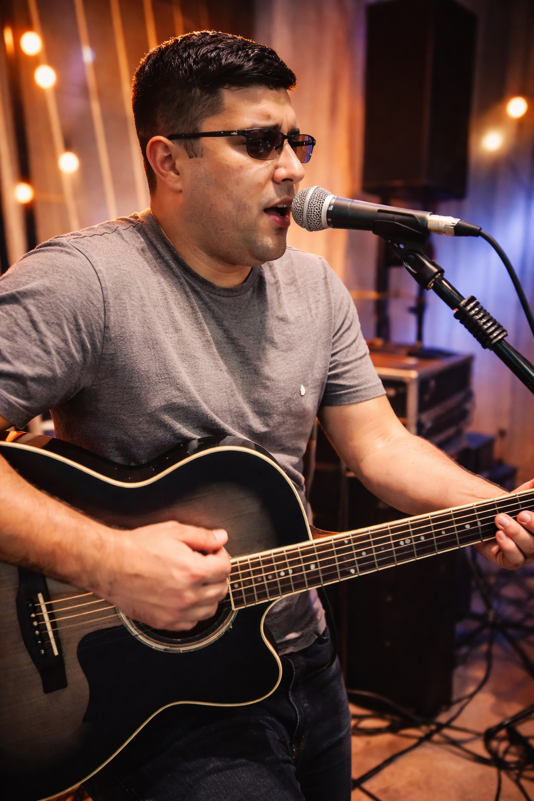
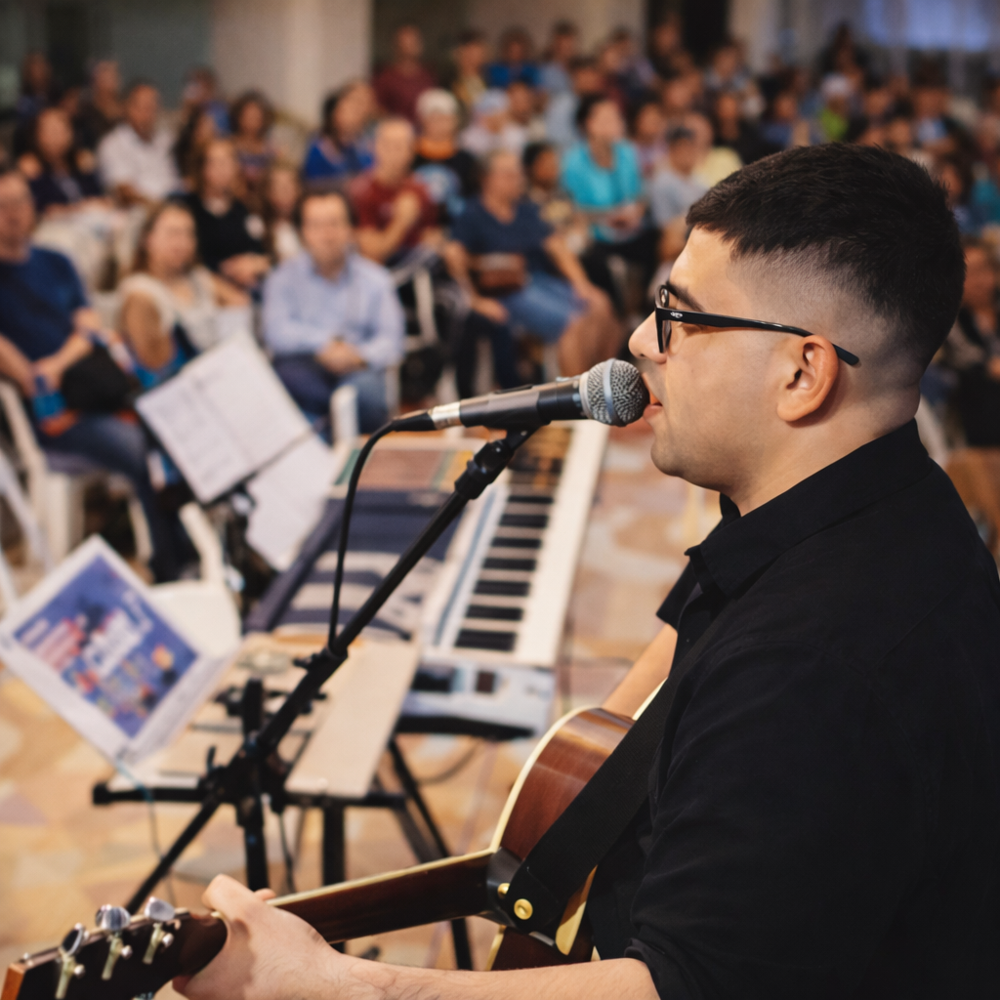

Diego Nascimento, de família de músicos, herdou o dom de seu avô, Joaquim Nascimento, o qual era violonista e compositor. Teve seu primeiro contato com o teclado aos 8 anos, influenciado por seu pai, Marialvo Nascimento, o qual é multi-instrumentista e produtor musical. Aos 13 anos, aprendeu a tocar violão e, aos 14, estudou técnicas vocais e partitura, enquanto crescia e desenvolvia a sua musicalidade no estúdio de seu pai. Aos 15, aprofundou-se em violão clássico, guitarra e bateria no Liceu de Artes e Ofícios Cláudio Santoro. Ingressou na Faculdade de Música da Universidade Federal do Amazonas, onde estudou por dois anos. Dedicou dez anos ao ensino de música e compôs, além de diversas músicas, a obra clássica para piano, Melodias da Floresta, que retrata os cantos dos pássaros. Atualmente, interpreta músicas internacionais em inglês, espanhol, francês e português, abrangendo gêneros como Rock, Jazz, Bossa Nova, entre outros.


Para shows, eventos e apresentações ao vivo:
Clique para ouvir 🎶 Fly Me to the Moon